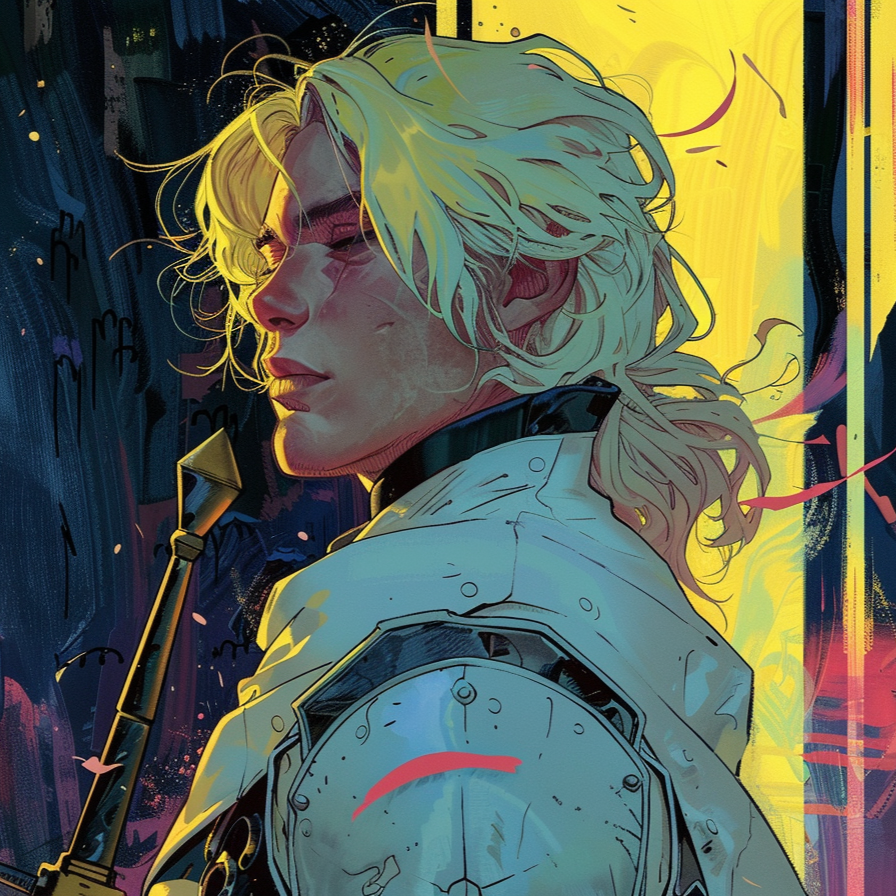

| TRISTAN |
|

|
| Race: |
Human |
| Age: |
18 |
| Height: |
179cm |
| Faction: |
Dawnlands |
| Ocupation: |
Squire |
| Connections: |
The Alchemists |
Tristan
Sometimes, even a crow can aspire to become a phoenix.
Tristan is the son of a noble alchemist who lost his life during the Dawn Wars. Since he was a child, he dreamed of following in his father's footsteps and going even further, having the knights of the Golden Order as his target of admiration.
Of pure heart and firm convictions, Tristan, along with his twin brother, Kahedin, decided to join the ranks of the Alchemists, with Tristan opting for the more chivalric side of the order: Wielding sword and shield, he studies the art of swordsmanship and combat enhancements with the intention of ridding the world of the same corruption that wiped out his family, following the firm dogmas of the Dawnlands: there is no place for magic that corrupts hearts, and the creatures of the night belong in the hell they have come from, and not in the lands of humans.